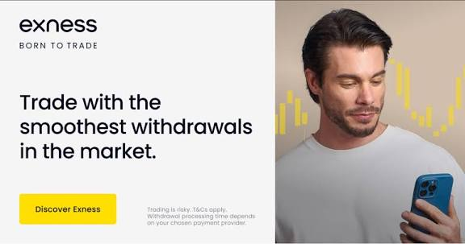
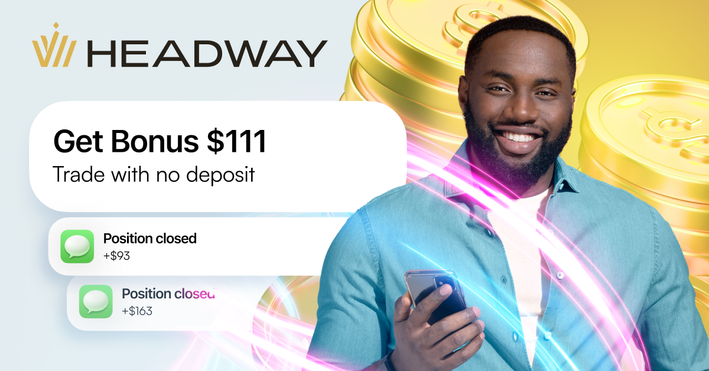
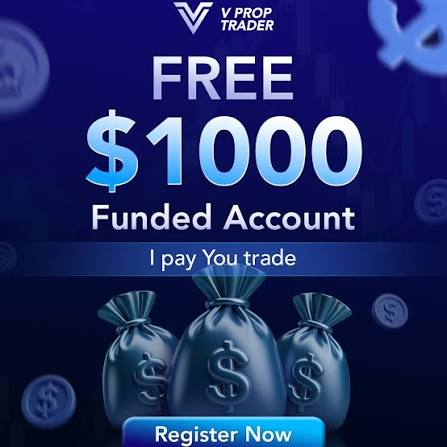

The first and most important step in your trading journey is choosing the right Forex broker. A broker provides access to the Forex market through a platform like MT4 or MT5. Since all trades go through your broker, choosing wisely is crucial for safety, cost, and ease of trading.
I personally recommend three trusted partners that I’ve tested and approved: Exness, Headway, and VProp.
If you’re looking for speed, transparency, and total control of your funds, Exness is an excellent choice. It offers lightning-fast execution, low spreads, and instant deposits and withdrawals — everything a serious trader needs for consistency and peace of mind.
For new and intermediate traders, Headway Broker provides a beginner-friendly platform with low deposit requirements, copy-trading, and strong educational support. They also offer a free no deposit bonus to start trading and withdraw profits.
And for traders ready to scale beyond personal capital, VProp is a leading prop firm that funds skilled traders. They offer every new user a FREE $1,000 funded account — no deposit required. You can start trading real capital, prove your consistency, and grow toward six-figure funding. Claim your free $1,000 account here.
By aligning with Exness, Headway, and VProp, you’re stepping into a professional trading ecosystem built for stability, growth, and financial independence.
“Success in Forex begins when your mindset, broker, and capital all align with your goals.”
A regulated broker is supervised by financial authorities like FCA (UK), ASIC (Australia), or CFTC (US). These regulators ensure safety and fair practices.
Unregulated brokers operate without oversight. They might offer extreme leverage or bonuses but come with serious risks like delayed withdrawals and unsafe funds.
As a beginner, always choose a regulated broker, even with a slightly higher deposit. Safety comes first.
Once you choose a broker, you’ll need a trading platform. The most common ones are MetaTrader 4 (MT4) and MetaTrader 5 (MT5).
MT4: Best for forex trading, simple and reliable.
MT5: Offers advanced tools, faster execution, and more order types.
As a beginner, start with MT4. You can move to MT5 later when you gain experience.
Tip: Focus on learning execution and discipline — not on profits — in your first trades.
A demo account is a risk-free environment to learn and practice your strategy with virtual funds.